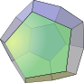
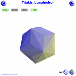

Polyhedron
A polyhedron is a solid shape with flat faces and straight edges.
Each face is a polygon (a flat shape with straight sides).
The plural can be polyhedra or polyhedrons.
Examples of Polyhedra:

Cube
Its faces are all squares

Triangular Prism
Its faces are triangles
and rectangles

Dodecahedron
What faces does it have?
No curved surfaces: cones, spheres and cylinders are not polyhedra.
Common Polyhedra
  |
Cubes and Cuboids (Volume of a Cuboid) |
   |
Platonic Solids |
 |
Prisms |
   |
Pyramids |
Many More
|  |
Explore 100s of Animated Polyhedron Models. You can also see some Images of Polyhedra if you want. |
Counting Faces, Vertices and Edges
When we count the faces (the flat surfaces), vertices (corner points), and edges of a polyhedron we usually find this:
The number of faces
plus the number of vertices
minus the number of edges
equals 2
This can be written neatly as a little equation:
F + V − E = 2
It is known as Euler's Formula (or the "Polyhedral Formula") and is very useful to make sure we have counted correctly!

Example: Cube
A cube has:
- 6 faces
- 8 vertices (corner points)
- 12 edges

Example: Triangular Prism
This prism has:
- 5 faces
- 6 vertices (corner points)
- 9 edges

Example: Honeycomb
Bees store honey in hexagonal prisms.
The ends are hexagons and the 6 sides are rectangles.
Each prism has 8 faces, 12 vertices and 18 edges.
Can you try to use Euler's Formula on this?
But there are cases where this does not work!
Read Euler's Formula for more.
Diagonals

A diagonal is a straight line inside a shape that goes from one corner to another (but not an edge).
A polyhedron can have lots of diagonals. Can you think of one without diagonals?